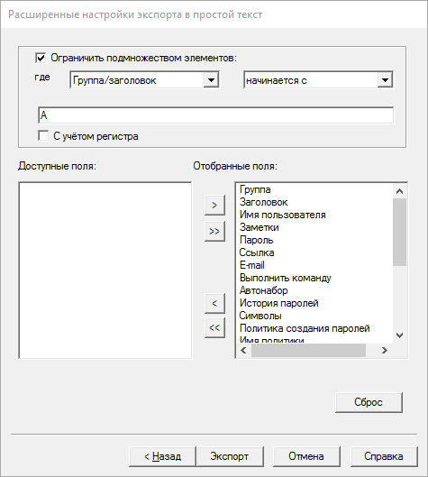

Внимание! Экспорт важной информации из контейнера Password Safe в текстовый файл может привести к серьёзным последствиям, связанным с безопасностью. Эта операция приводит к созданию незащищённой копии указанных элементов. Простого удаления данной копии недостаточно, и требуется использование дополнительных утилит для гарантированного удаления данных. Экспорт важной информации позволяет обойти меры защиты, предоставляемые Password Safe.
Текстовый файл с экспортированными данными:
При импорте считается, что:
Строка с заголовками для полного экспорта содержит следующие поля, разделённые табуляцией (в скобках приведён перевод, который не пишется в файл экспорта):
С помощью расширенных настроек экспорта можно исключить ненужные поля из заголовка и экспортируемых записей. Расширенные настройки также позволяют выбрать подмножество элементов для экспорта.

При импорте из текстового файла строка с заголовками должна содержать имена столбцов, совпадающие с именами из указанного списка. Если какой-либо из заголовков повторяется, будут использованы данные из последнего столбца с повторяющимся именем. Если заголовок не совпадает ни с одним из указанных, данные из этого столбца игнорируются. Поля должны быть разделены определённым символом, который указывается в диалоге импорта.
| Имя столбца (поля) | Примечания |
| Group/Title (группа/заголовок) | Группы (если присутствуют) разделяются точками («.»). Поле «Title» (заголовок) не может быть пустым или содержать символ-разделитель. |
| Username (имя пользователя) | |
| Password (пароль) | Не может быть пустым. |
| URL (ссылка) | |
| Autotype (автонабор) | |
| Created Time (время создания) | См. примечание 1 |
| Password Modified Time (время изменения пароля) | См. примечание 1 |
| Last Access Time (время последнего доступа) | См. примечание 1 |
| Password Expiry Date (дата истечения пароля) | См. примечание 1 |
| Password Expiry Interval (срок действия пароля) | См. примечание 1 |
| Record Modified Time (время изменения записи) | См. примечание 1 |
| Password Policy (политика создания паролей) | См. примечание 3 |
| History (история) | См. примечание 2 |
| Run Command (выполнить команду) | |
| DCA (действие по двойному клику) | См. примечание 4 |
| Shift+DCA (действие по Shift+двойной клик) | См. примечание 4 |
| e-mail (электронная почта) | |
| Protected (защита элемента) | |
| Symbols (набор символов для создания пароля) | |
| Notes (заметки) |
|
|
Время может быть указано в одном из 7 форматов: |
| 1. | гггг/ММ/дд чч:мм:сс | например, 2007/01/26 19:31:25 |
| 2. | ддд МММ дд чч:мм:сс гггг | например, Вск Окт 31 19:31:25 2010 |
| 3. | гггг-ММ-ддTчч:мм:сс | например, 2007-01-26T19:31:25 |
| 4. | гггг-ММ-ддTчч:мм:ссZ (только XML) | например, 2007-01-26T19:31:25Z |
| 5. | гггг-ММ-ддTчч:мм:сс±чч:мм (только XML) | например, 2007-01-26T19:31:25+01:00 |
| 6. | 0 | оставить поле незаполненным |
| 7. | now | Использовать время импорта |
где:
| гггг | Год в четырёхзначном виде. Значение от 1970 до 2038. |
| ММ | Месяц в двузначном виде: 01 = январь, 02 = февраль, и т. д. |
| дд | День месяца. |
| МММ | Краткое наименования месяца (язык сокращения для месяца зависит от текущей локали): Jan = January, Feb = February или Янв = январь, Фев = февраль и т. д. |
| ддд | Краткое наименование дня недели (язык сокращения для дня недели зависит от текущей локали): Mon = Monday, Tue = Tuesday, Вск = воскресенье, Пнд. = понедельник и т. д. |
| чч | Час в 24-часовом формате. |
| мм | Минуты в двузначном формате |
| сс | Секунды в двузначном формате |
Примечание. Формат 2 является выводом ANSI C функции «asctime», а формат 3 соответствует стандарту ISO 8601.
|
История паролей состоит из заголовка, описывающего элементы истории и требуемого количества записей о старых паролях: |
Заголовок истории паролей:
Элемент истории паролей:
|
Политика создания паролей экспортируется как текстовое поле «ffffnnnllluuudddsss» в шестнадцатеричном формате, например, «F000010004002005003». Это поле содержит 6 шестнадцатеричных чисел. Первое из них состоит из 4-х цифр, остальные — из 3-х. расшифровка «ffffnnnllluuudddsss»:
Политика паролей «F000010004002005003» расшифровывается как:
|
|
Допустимы следующие значения для действия по двойному клику:
|